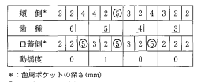
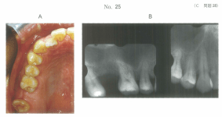

歯周病（periodontal diseases）とは、歯周組織に発症し、歯周組織を破壊する疾患の総称。主に以下の3つに分類される。
| 所見 | 歯肉炎 | 歯周炎 | 一次性咬合性外傷 | 二次性咬合性外傷 |
|---|---|---|---|---|
| 歯肉の発赤・腫脹 | あり | あり | なし | あり |
| ポケットの形成 | 歯肉ポケット | 歯周ポケット | なし | あり |
| アタッチメントロス | なし | あり | なし | あり |
| 歯槽骨吸収 | なし | あり | あり | あり |
| 歯の動揺 | なし | あり | あり | あり |
| 原因 | プラーク | プラーク | 強い咬合力 | 通常の咬合力 |
| 項目 | 慢性歯周炎 | 侵襲性歯周炎 |
|---|---|---|
| 発症年齢 | 主に35歳以降 | 主に20歳代から |
| 進行速度 | 緩徐 | 急速 |
| 罹患率 | 高い（大多数） | 0.05〜0.1% |
| 全身的健康 | 様々 | 全身的に健康なことが多い |
| 家族内集積 | 少ない | あり |
注意：両者は治療法も異なるため、臨床的鑑別診断が重要。
歯周病は国民病であり、歯の喪失の主な原因である。
| 項目 | 一次性咬合性外傷 | 二次性咬合性外傷 |
|---|---|---|
| 歯周組織 | 健全 | 歯周炎により脆弱化 |
| 原因 | 過大な咬合力 | 正常な咬合力 |
| 臨床所見 | 歯肉に炎症なし | 歯肉に炎症あり |
歯周炎と全身疾患の関連を研究する学問。
49歳の男性。歯周基本治療後の再評価で上顎右側臼歯部に深い歯周ポケットが残存していたためフラップ手術を行うこととした。再評価時の口腔内写真（別冊No.25A）、エックス線写真（別冊No.25B）及び切開線を示す口腔内写真（別冊No.25C）を別に示す。
写真(別冊No.25C)に示す切開線で適切なのはどれか。1つ選べ。


【解説】フラップ手術の切開線は、歯周ポケットの深さや角化歯肉幅を考慮して選択する。深いポケットには内斜切開（歯肉頂縁から0.5〜1mm離れた部位）が適切。
歯周炎で正しいのはどれか。すべて選べ。
【解説】喫煙は歯周炎の主要なリスクファクター。歯周病は永久歯喪失の主な原因。糖尿病患者では有病率が高い。歯種により発生率は異なる（大臼歯に多い）。侵襲性歯周炎は若年者にも発症する。
ペリオドンタルメディシンに関わる疾患はどれか。2つ選べ。
【解説】ペリオドンタルメディシンで関連が明らかな疾患は、糖尿病と心血管系疾患（冠状動脈疾患）。その他、誤嚥性肺炎、低体重児出産・早産なども関連する。